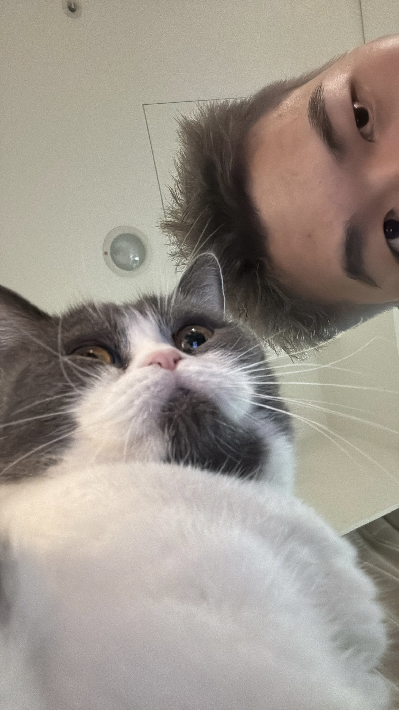

01 — The Shadow
故事的開端，
其實是灰色的。
童年記憶裡，貓總是帶給我一種邪惡且不可理喻的印象。那個早晨，陽台上的不速之客，在我心裡留下了一道很深的印記。
A story about a cat & a man who didn't want one
我 與 地 瓜
01 — The Shadow
童年記憶裡，貓總是帶給我一種邪惡且不可理喻的印象。那個早晨，陽台上的不速之客，在我心裡留下了一道很深的印記。

02 — The Arrival
最初與地瓜的相遇，是因為剛與現任伴侶在一起時，對方做了養貓的決定。我沒有選擇，牠就這樣出現在我的生命裡。

03 — The Distance
起初我很害怕與牠共處一室。腦海中揮之不去的，是那段童年的糟糕記憶。牠試著靠近，我選擇保持距離。

04 — Lockdown
隨後而來的疫情封城，將我與這隻「神祕生物」強制關在同一個屋簷下。沒有退路，沒有距離，只有彼此。

05 — The Weight of Waiting
那是生命中最靜謐也最迷惘的時刻。工作觸礁的挫折感讓我窒息，但地瓜卻在那段日子裡，日以繼夜地陪在我身邊，用牠的安靜修補了我的焦慮。

06 — The Turn
在那 180 天的朝夕相處中，我發現那雙曾經讓我畏懼的眼睛，其實藏著最純粹的溫柔。

07 — The Shift
不知道從哪一天開始，牠跳上沙發、靠著我，我不再覺得奇怪。這已經是日常。牠在哪裡，哪裡就像家。

08 — Helicopter Cat Dad
從前我認為「貓只要水和乾糧就能長大」；現在，我進化成了那個不可理喻的直升機家長，想給牠最好的、守護牠的每一寸快樂。

DiGua & Me — 2018
"I just want you
to be happy, and to stay."
真的很感謝有牠的存在。
希望能好好照顧牠、保護牠，
陪著牠慢慢變老。
黃崇耘 & 地瓜 — 2018 to forever